Vanilla Earth
Tue, 03 May 2022 05:09:05 GMT
85 Days, 6 Hours, 50 Minutes, and 54 Seconds until Year 7 on Starter Planet.
Starter Planet
It is currently the 335rd day of the Year 6
In New Charcherry town, the time is 7:09:06, dawn (which sun tho)
Quick guide:
Sunrise: 6 to 7
Noon: 13
Sunset: 19 to 20
Midnight: 26
Desertia
Tue, 03 May 2022 05:09:05 DZT
DZT is functionally the same as CST, daylight savings and all.
PLEASE FIX ME...
Korous
It is currently the 1153rd day of the Year 460, in month 15.
In Hourglass City, the time is 11:09:06, afternoon
Quick guide:
Sunrise: 4 to 6
Noon: 9
Sunset: 15 to 16
Midnight: 18
Unix Time
1651554546
